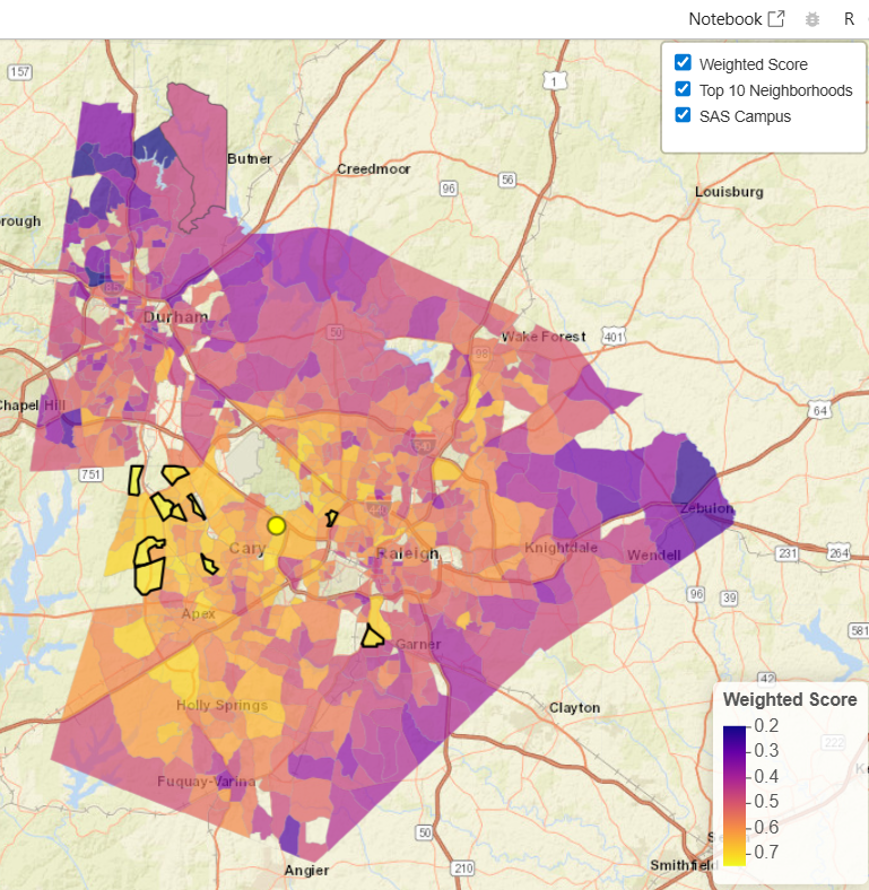
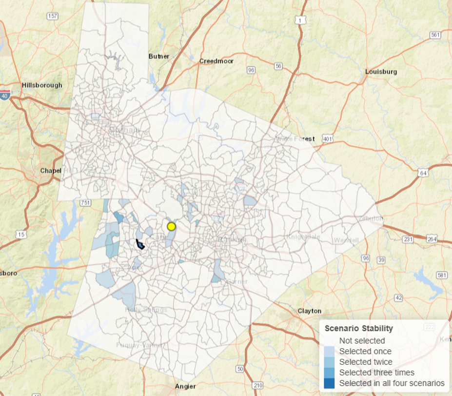

Question
Frame a real decision with competing priorities.
A data-driven search for the right neighborhood, and a lesson in making decisions when the answer is not obvious.
At first glance, that sounds like a simple question. But the answer depends on what matters most. Using public demographic, housing, commute, and amenity data, this project evaluates neighborhoods across Wake and Durham counties under several different definitions of a good fit.
The result was not a single “best” neighborhood. It was something more interesting.
The Journey
The tools matter, but the progression matters more. Each stage moves the project closer to a decision that can be explained, challenged, and improved.
Frame a real decision with competing priorities.
Use Python to assemble demographic, geographic, commute, and amenity evidence.
Use SAS to score neighborhoods and test multiple priority scenarios.
Use R to map the results and reveal patterns that tables can hide.
Look for candidates that remain strong as assumptions change.
One Scenario
The baseline scenario combines commute time, housing affordability, income, family-oriented characteristics, and nearby amenities into a weighted neighborhood score.
The map shows how scores vary across the study area. The outlined block groups represent the Top 10 candidates under this single set of assumptions.
A score can identify strong candidates. It cannot decide what should matter most.

Test the Assumptions
Each scenario uses the same neighborhood data but changes the priorities used to score and select candidates. Comparing the results reveals which recommendations are specialized and which are more robust.
Gives several neighborhood characteristics meaningful influence.
Places greater emphasis on proximity and estimated travel time to the SAS campus.
Places greater emphasis on family-oriented neighborhood characteristics.
Places greater emphasis on parks, grocery stores, and bike access.
The Big Insight
Most people think analytics discovers The Truth™. In practice, analytics is often more useful for identifying solutions that remain strong when priorities, constraints, and assumptions change.
Instead of asking, “Which neighborhood wins?” we asked, “Which neighborhoods keep showing up?”

What This Project Really Demonstrates
The most compelling candidates were not necessarily the neighborhoods that ranked first under one set of priorities. They were the neighborhoods that continued to perform well as those priorities changed.
That simple idea introduces several important analytical concepts without turning the experience into a vocabulary lesson.
Your Turn
Choose a question that matters to you. Gather evidence, compare alternatives, test assumptions, and communicate what remains true when the rules change.
Question → Evidence → Scenarios → Tradeoffs → Decision
What Would You Explore?
From Project to Portfolio
A strong analytics portfolio connects a meaningful question to evidence, analytical choices, findings, limitations, and a clear decision story.
{kind=link}
{kind=link}